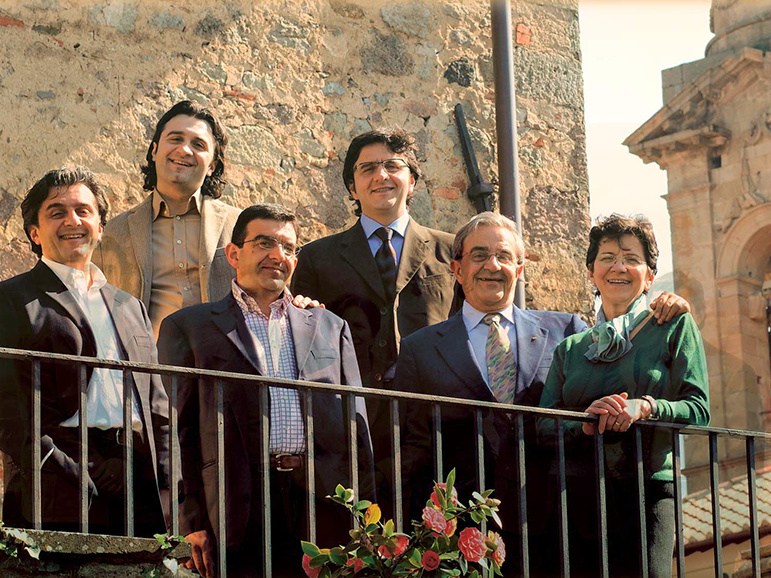
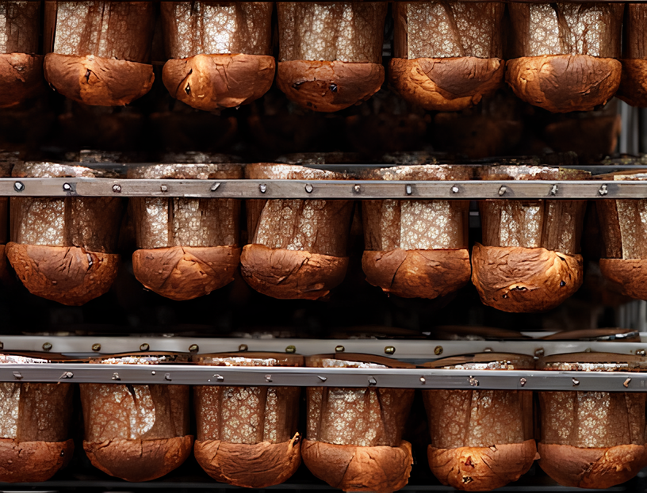

La Nostra Famiglia
Dal 1921, la famiglia Corsini custodisce l'arte della pasticceria artigianale ai piedi del Monte Amiata. Quello che è iniziato nell'antico forno a legna di Corrado e Solidea è oggi un'eredità di quattro generazioni che preferiscono produrre meno per produrre meglio, rispettando i ritmi della natura e i profumi della Toscana più autentica. Tradizione, lievito madre e il piacere di fare le cose per bene: un pezzo di storia sfornato ogni mattina per chi cerca il gusto del vero.


L'Arte della Pazienza
Il primo esclusivo ingrediente è la nostra passione per la qualità. Poi c’è l’amorevole cura del lievito madre che in casa Corsini trattiamo da sempre come fosse un glio.
Ingredienti di primissima scelta, il rispetto delle regole della migliore tradizione pasticcera,una lavorazione accurata e paziente, la caratteristica spezzatura a mano. Poi la magia dell’antico forno di famiglia per la migliore cottura ed in ne... l’attesa, un lungo naturale riposo per circa 48 ore a nché il nostro Panettone possa risvegliarsi ancora più morbido e buono.